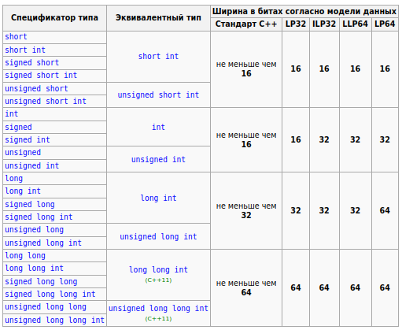

Фундаментальные типы данных
C++ - это сильно типизированный язык. Это означает, что у каждой переменной, у каждой функции, ..., должен быть явно указан тип.
Из-за ошибок при работе с типами данных в C и в C++ в истории человечества происходило множество страшных событий: от багов в играх до взрывающихся ракет и падающих самолётов (буквально - всё это разберём в дальнейших уроках).
Поэтому очень важно понимать, какие типы есть в С++ и как с ними работать.
Что такое тип?
Справедливый вопрос, который зачастую не обговаривается (а зря).
Обсудим это на примере переменной.
Тип - это свойство переменной, которое определяет:
- Операции, которые можно совершать над переменной (например, основные арифметические операции для целых чисел)
- Набор значений, которые может принимать переменная данного типа. Например, обычно переменная типа
intможет принимать значения от-2 147 483 647до2 147 483 647. Или, например, булева переменная (bool) может принимать значение толькоtrueилиfalse(1 или 0).
Пример того, как мы указываем тип в C++:
- При создании функций
int sum(int a, int b)
{
return a + b;
}
Здесь мы чётко указали, что функция с именем sum принимает на вход два целых числа и как результат выполнения тоже возвращает целое число
- При объявлении переменных
std::string name;
Здесь мы чётко указали, что переменная с именем name имеет тип std::string (то есть, это строка).
Переменные в памяти компьютера
Вообще, память компьютера упрощённо можно представить как бесконечную ленту из 0 и 1:
01010101000100100011110100101010010101010...
(конечно, на самом деле это не так, но в рамках курса такое объяснение вполне допустимо).
Какая-то часть этой "ленты" используется запущеными приложениями, какая-то нет.
Итак, предположим, что у нас в памяти компьютера по какому-то адресу лежит переменная.Это будет выглядеть примерно так:
...[10011101]...
То есть, у нас выделен определённый фрагмент, в который потом записали обозначенные данные.
И без типа данных вот эта последовательность нулей и единиц (бит) не имеет никакого смысла. Может быть, тут зашифрован символ в какой-то кодировке. Может, здесь зашифровано целое число. А может дробное. А может это вообще какой-то специальный крутой шифр, в котором закодирован пароль запуска ядерных боеголовок - мы не знаем. В такой ситуации, эти данные для нас только мусор.
Тип данных наделяет эту последовательность бит смыслом, и определяет то, как с этими данными можно работать. Это важно и для пользователя, который будет работать с переменной, и для компьютера, который будет выполнять над этими данными какие-то машинные операции (переместить в регистр/сложить с другим регистром/скопировать значение в другую область памяти/...).
Какие в С++ бывают типы?
страуструп б. - программирование. принципы и практика с использованием c++
В языке С++ предусмотрен довольно широкий выбор типов (см. раздел А.8). Однако можно создавать прекрасные программы, обходясь лишь пятью из них.
int number_of_steps = 39; // int - для целых чисел
double flyinq_time = 3.5; // double - для чисел с плавающей точкой
char decimal_point = '.'; // char - для СИМВ ОЛОВ
string name = "Annemarie"; // string - для строк
bool tap_on = true ; // bool - для логических переменных
Но всё же, рассмотрим представленные в C++ типы чуть подробнее.
Общее деление типов
Согласно документации, типы в C++ делятся на:
- Фундаментальные - совсем простые типы, без которых никуда не деться (
int,char,double, ...) - Составные - типы, которые, по сути, строятся на основе фундаментальных
Фундаментальные типы
Фундаментальные типы - это самые простые типы языка C++, которые служат "кирпичиками" для построения более сложных, составных типов.
Целые числа (int)
Целые числа в С++ задаются ключевым словом int. Пример:
int a = 1; // a - целое число
Вычисление границ инта
Обычно, переменная int занимает 4 байта.
В памяти целое число хранится просто в виде его представления в двоичной системе счисления.
Например, число 5 в памяти будет хранится как 101.
Из этого следует, что мы можем посчитать, какое максимальное число можно уместить в переменной типа int:
- 4 байта - это \(4 \times 8 \) = 32 бит
- Целое число может быть и отрицательным - поэтому 1 бит уходит на хранение знака числа (Если первый бит - 1, то число отрицательное, 0 - положительное). Итого на хранение самого числа остаётся 31 бит.
- 31 бит соответствует числу в двоичной системе счисления, которое может состоять максимум из 31-го символа.
- Максимальное десятичное число, которое в двоичной системе счисления будет занимать не больше 31-го символа можно вычислить как: \[ x = 2^{31} - 1 = \text{2 147 483 648} - 1 = \text{2 147 483 647} \]
Получается, что целые числа (с учётом знаковости) могут принимать значения от -2 147 483 647 до 2 147 483 647.
Спецификаторы типа
Для типа int можно задавать спецификаторы типа - это специальные ключевые слова, которые уточняют тип переменной int. Давайте разберёмся, какие они бывают.
- Уточняющие знаковость целового числа (может ли число быть положительным или нет) -
signedиunsigned.intпо умолчаниюsigned. - Уточняющие размер числа -
short,long,long long. Так мы можем определить, с насколько большим целым числом мы хотим работать (и, соответственно, сколько памяти нужно выделять для хранения этого числа).
Если число будет беззнаковое (unsigned), то в нём для хранения самого числа выделяется уже не 31, а 32 бита (так как отдельный бит для хранения знака уже не нужен). Получается, числа unsigned int могут лежать в пределах от 0 до \( 2^{32} - 1 = \text{4 294 967 296} - 1 = \text{4 294 967 296}\).
По поводу размеров int обычно работает следующая шкала:
short int- 2 байтаint- 4 байтаlong int- 8 байтlong long int- 16 байт
Для этих типов диапазоны значений высчитываются аналогично. При желании, их можно самому легко посчитать в калькуляторе, или банально нагуглить.
...с помощью спецификаторов можно задавать переменные типа int самыми разными способами:
int a;
short int b;
short c;
long d;
long long e;
signed int f;
unsigned int g;
unsigned long long int h;
// и т.д.
То есть, можно как угодно сочетать спецификаторы, определяющие размер и знаковость числа. Так же можно опускать при определении типа слово int, если уже используется, например, long long или signed.
Реальный размер инта
Очень тонкий момент заключается в размере int. Да, обычно, размеры int такие, как я написал. Но это только обычно, а не всегда. На самом деле, размер int может различаться на разных платформах! Это определяется разрядностью и архитектурой процессора, и другими особенностями. Если взглянуть в официальную документацию C++, то размеры int там определены следующим образом:

Обратите внимание на словосочетание: "не меньше чем". Стандарт С++ не гарантирует точный размер переменной типа int! По таким ограничениям, short int может быть такого же размера, как int.
Почему же существует такая путаница и неразбериха? Потому что C++ позволяет очень "близко" (на низком уровне) работать с целевой машиной, на которой работает программа. Поэтому такой базовый тип, как int, и зависит от аппаратных возможностей конкретного конкретного компьютера, на котором будет собрана и запущена программа.
Но всё не так плохо! Если мы захотим, мы можем создать переменную int, которая будет ровно того размера, который нам нужен.
Чтобы чётко указать компилятору, что мы хотим переменную int размером в столько-то байт, существуют специальные типы:
int32_t a; // Переменная signed int размером 32 бита (4 байта)
int8_t b; // Переменная signed int размером 8 бит (1 байт)
uint16_t c; // Переменная unsigned int размером 16 бит (2 байта)
На самом деле, это не отдельные типы, а просто заранее определённые typedef-псевдонимы. Они на этапе компиляции "подгоняются" под целевую машину, и, например, вместо int16_t на этапе компиляции может подставиться short int. Что такое typedef, мы разберём подробнее позже.
Числа с плавающей точкой
...или же дробные числа, или же вещественный числа, или же числа со знаками после запятой.
Для хранения вещественных чисел в C++ используется 3 типа данных:
floatdoublelong double
С целыми числами все понятно, как они хранятся в памяти: это просто последовательность бит, которая в двоичной системе соответствует целому числу. Последовательность бит 10 означает \( 2_{10}\), 11 - \(3_{10}\), и так далее.
Хранить же дробное число, так же как и выполнять с ним какие-то операции, на уровне бинарной арифметики, достаточно сложно и неудобно. Отсюда зачастую можно встретиться вот с таким интересным поведением программ (и не только на языке C++):
float f = 0.6;
std::cout << (f/2 == 0.3); // 0 (false)
На эту тему можно посмотреть отдельный ролик.
Здесь же скажем коротко: существуют специальные стандарты, которые определяют, как в компьютере будет храниться дробное число, и которые определяют допустимый размер дробного числа.
Выдержка из документации касательно стандартов представления дробных чисел:
cppreference.com
- float - тип с плавающей запятой одинарной точности. Соответствует формату IEEE-754 binary32, если поддерживается.
- double - тип с плавающей запятой двойной точности. Соответствует формату IEEE-754 binary64, если поддерживается.
- long double - тип с плавающей запятой повышенной точности. Соответствует формату IEEE-754 binary128, если поддерживается, в противном случае соответствует IEEE-754 binary64-расширенному формату, если поддерживается, иначе соответствует некоторому расширенному формату с плавающей запятой, отличному от IEEE-754, если его точность лучше, чем binary64, и диапазон не менее хорош как binary64, иначе соответствует формату IEEE-754 binary64.
Размеры для этих типов распределяются так:
float: представляет вещественное число одинарной точности с плавающей точкой в диапазоне+/- 3.4E-38 до 3.4E+38. В памяти занимает 4 байта (32 бита)double: представляет вещественное число двойной точности с плавающей точкой в диапазоне+/- 1.7E-308 до 1.7E+308. В памяти занимает 8 байт (64 бита)long double: представляет вещественное число двойной точности с плавающей точкой не менее 8 байт (64 бит). В зависимости от размера занимаемой памяти может отличаться диапазон допустимых значений
Символьные типы
char
Для представления символов в C++ используется тип char.
Символы в языке C++ обозначаются через одинарные кавычки:
char a = 'D';
Обратите внимание, что в C++ существует чёткое разделение между символами и строками (в отличие от того же питона). Поэтому символы обозначаются здесь одинарными кавычками, а строки - двойными.
Для хранения текста в памяти компьютера вообще (в отрыве от С++) существует огромное число разных кодировок:
- ASCII
- KOI8R
- Windows1251
- UTF8 / UTF16 / UTF32
- ...
В C++ для типа char используется очень простая кодировка ASCII. В этой кодировке самым основным символам предоставляется численный код от 1 до 127:

Благодаря этой кодировке, char занимает в памяти только 1 байт. Но с помощью него нельзя хранить специальные символы (эмодзи, математические символы), или символы из алфавитов разных языков (например, иероглифы).
В кодировке ASCII каждому симолу просто присваевается какое-то число от 0 до 127. Таким образом, символ "!" может быть закодирован как число 33, символ "N" как число 78, и так далее.
Ну и, соответственно, символ в кодировке ASCII в памяти будет хранится как то же самое целое число. Или же, другими словами, последовательность бит, в виде которой хранится в памяти переменная char, соответствует коду сивола в таблице ASCII в двоичной системе счисления.
По этой причине, значения типа char могут использоваться вместе с целыми числами:
int D_ascii_code = 'D'; // Будет хранить 68 - код 'D' в таблице ASCII
char a = 33; // В переменную a запишется символ с ASCII-кодом 33. То же самое, что a = '!';
int b = a + 15; // здесь вместо a подставится ASCII-код лежащего там символа. b = 33 + 15 = 48
char c = 'A' + 1; // После символа 'A' в таблице ASCII лежит символ 'B'. c = 'A' + 1 = 65 + 1 = 66 = 'B'
Формально, char может принимать отрицательное значение (1 бит в его двоичном представлении выделяется на знак). Можно объявить переменную с типом unsigned char, тогда она будет принимать значения от 0 до 255.
Но правило в этом плане следующее: всегда используйте только char; unsigned char используйте только в тех редких случаях, когда вы очень чётко представляете, зачем вам это нужно.
У использования char для хранения символов есть некоторые минусы:
- Реализация
char, так же как иint, различается на разных платформах. - С помощью
charможно хранить только очень небольшой перечень доступных символов
Для решения второй проблемы существует отдельный тип - wchar_t, или же "широкий char".
wchar_t
С помощью этого типа мы можем хранить и выводить на экран хоть эмодзи, хоть иероглифы.
"Под капотом" в wchar_t хранятся символы в кодировке Unicode.
Пару слов про Unicode. Юникод работает по тому же принципу, что и ASCII - каждому символу присваевается какой-то код, и в конечном итоге число в памяти компьютера хранится как этот код.
В отличие от ASCII, в юникоде поддерживается намного больше символов (десятки тычяч против 128).
Также, у юникода есть несколько разновидностей:
UTF-8. В этой кодировке каждому символу в памяти выделяется ЛИБО 8, либо 16, либо 32 бита. То есть, размер символа в этой кодировке - непостоянный.UTF-16. В этой кодировке каждому символу в памяти выделяется либо 16, либо 32 битаUTF-32. В этой кодировке каждый символ занимает в памяти чётко 32 бита.
Про кодировки UTF-8 и UTF-16 говорят, что символы в этих кодировках
соответствуют какому-то количеству кодовых единиц:
- Символы в
UTF-16могут занимать одну (16 бит) или две (32 бита) кодовые единицы. - Символы в
UTF-8могут занимать одну (8 бит), две (16 бит) или четыре (32 бита) кодовые единицы.
question
Почему 32 бита в UTF-16 соответствуют 4 кодовым единицам, а не 3?
...зачем же нам нужен непостоянный размер символов в кодировке? Это помогает сократить использование памяти: для символов, которые спокойно умещаются в 1 байт (их номер не превосходит 255), не придётся выделять в памяти лишние 3 байта.
Но, одновременно с этим, увеличивается сложность обработки текста с непостоянным количеством бит на каждый символ.
...из-за того, что wchar использует unicode, стоит понимать, что он принципиально отличается от char, и просто так заменить один тип на другой не получится, потому что алгоритм работы с разными кодировками сильно различается.
Например, вот так будет выглядеть вывод одного символа с использованием wchar_t:
#include <iostream>
int main()
{
wchar_t symbol = L'🍌';
std::wcout << symbol << std::endl;
}
Здесь можем заметить сразу несколько вещей:
- Для
wchar_tнужно использовать специальный потокwcout - Для обозначения шикроких символов нужно писать
L''- подробнее об этом расписано в статье про литералы
Если попытаться в коде выше заменить wcout на cout, компилятор откажется компилировать этот код.
Но у wchar_t есть один минус: "под капотом" у него не всегда используется одна и та же вариация юникода.
Например, на Linux-машинах это обычно UTF-32 - wchar_t занимает 32 бита и поддерживает все доступные в юникоде символы.
На Windows-машинах же зачастую используют 16 бит для представления символов, и поэтому в wchar_t помещаются не все юникод-символы.
Эту проблему видно даже на нашем примере: если в системе, на которой запускается этот код,
для whcar_t используется 16 бит, код эмодзи просто в них не поместится, и на экран выведется мусор.
char8_t, char16_t и char32_t
Для тех случаев, когда мы чётко хотим определить используемую кодировку, используются типы char8_t, char16_t и char32_t.
- В
char8_tхранятся символыUTF-8, которые помещаются в 8 бит - В
char16_tхранятся символыUTF-16, которые помещаются в 16 бит - В
char32_tхранятся символыUTF-32.char32_tв памяти занимает 32 бита.
В коде их использование может выглядеть примерно так:
char8_t C1 = u8'a';
// char8_t C2 = u8'¢'; // ошибка: ¢ соответствует двум кодовым единицам UTF-8
// char8_t C3 = u8'猫'; // ошибка: 猫 соответствует трём кодовым единицам UTF-8
// char8_t C4 = u8'🍌'; // ошибка: 🍌 соответствует четырём кодовым единицам UTF-8
print("\n" "UTF-16 character literals:");
char16_t uc1 = u'a';
char16_t uc2 = u'¢';
char16_t uc3 = u'猫';
// char16_t uc4 = u'🍌'; // ошибка: 🍌 соответствует двум кодовым единицам UTF-16
print("\n" "UTF-32 character literals:");
char32_t Uc1 = U'a';
char32_t Uc2 = U'¢';
char32_t Uc3 = U'猫';
char32_t Uc4 = U'🍌';
(пример с cppreference).
Вообще, нам в курсе эти типы вряд ли потребуются, но полезно знать, что это такое и зачем оно нужно.
Логический тип
Для представления булевых/логических значений, в C++ используется тип bool.
Переменные типа bool могут принимать только два значения: true или false (1 или 0).
Пример использования:
bool a = true; // 1
bool b = false; // 0
bool c = a | b; // 1 | 0 = 1
В памяти bool занимает один байт. Возможно, у вас возникнет вопрос, почему не один бит, ведь bool по сути хранит только один или ноль.
Ответ на этот вопрос достаточно сложный, но если попытаться ответить на него коротко, то компьютер не может так дробить память, чтобы выдавать нам ровно 1 бит под хранение переменной. 1 байт - это минимальный размер "долек", на которые компьютер может "дробить" память.
Составные типы
Это типы, которые являются "надстройками" над фундаментальными типами. К таким типам можно отнести:
- Указатели и ссылки
- Массивы
- Функции и функторы
- Перечисления
- Классы
Что это всё такое, сейчас разбирать не будем, потому что, по сути, большая часть нашего курса как раз и посвящена обсуждению того, что это за такие типы :)
Бонус: std::string
Чтобы полностью осознать, что из себя представляет на самом деле std::string, нам потребуется ещё несколько уроков, но пока, чтобы создавать минимально функциональные приложения, можно просто запомнить, как его использовать.
std::string используется для хранения строк в C++. Стоит понимать, что это не фундаментальный тип - ведь std::string является не чем-то отдельным, а просто надстройкой над char.
Пример использования std::string:
int main()
{
std::string name = "Maxim";
std::cout << "Hi, " + name << " !" << std::endl;
}
Источники
- Статья про типы из оф. документации
- Программирование. Принципы и практика использования C++ - Бьерн Страуструп
- Статья про фундаментальные типы из оф. документации
- Видео про дробные числа (Why Is This Happening?! Floating Point Approximation)
- IEEE 754-2008 - вики